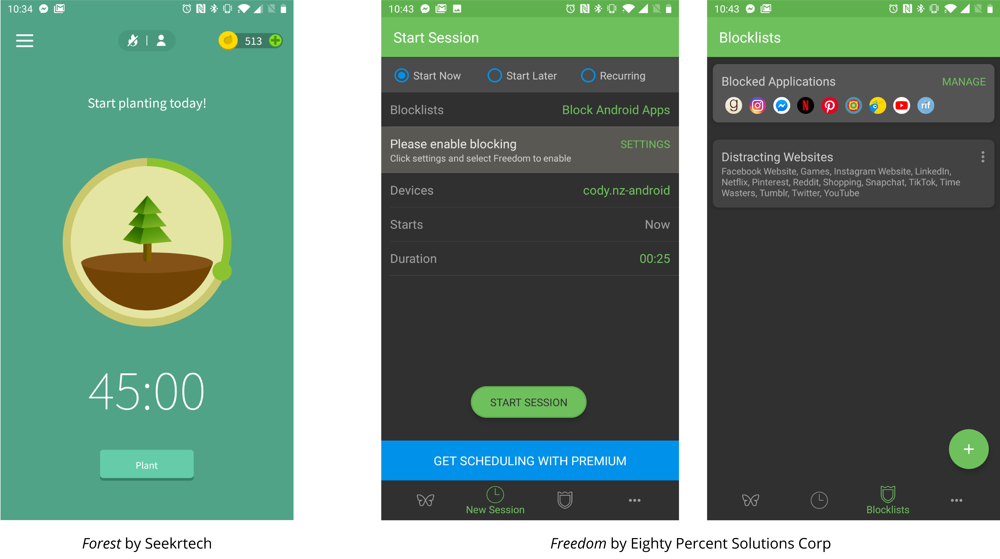
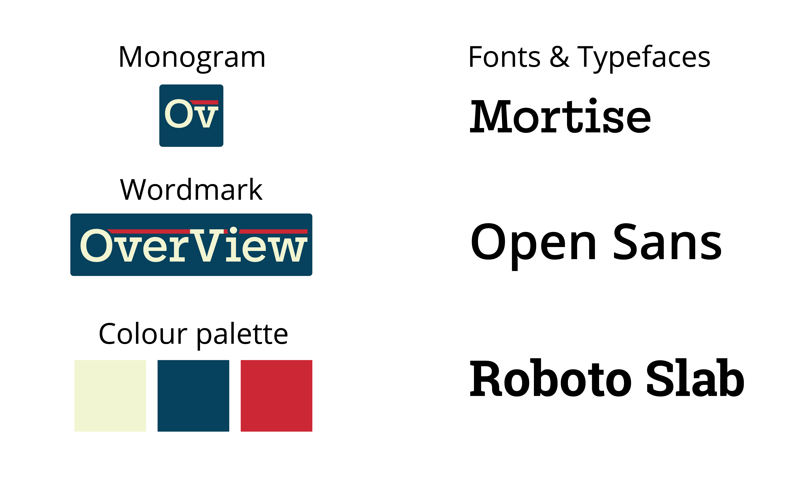

The idea of Overview is that users will be left with a better understanding of their
internet habits across devices. With simple information provided
users will be able to grasp how much of their time the internet takes up in any given day, or across weeks
and months. With this information, the users perspective about the internet and their relationship to it may change

-
5.1 billion
The amount of unique mobile users in the world today
-
1,000,000
People have joined the internet each day since January 2018
-
6.5 hours
As a species, we average more than 6 and a half hours per day browsing the internet
-
100 / 365
We spend a total of more than 100 days online per year for each internet user
-
2X
Studies have shown we grossly under estimate how much we check our phones. Participants in
this study
were checking their phones twice as much as they estimated
-
Time
This study
reveals how viewing internet content alters our perception of time.
People tend to underestimate the amount of time they've spent browsing
How it works
OverView tracks your internet usage and provides simple, useful data. By understanding your online habits, you can work towards building a better, healthier relationship with the internet.

In this example the user has just closed their browser window. This is when OverView activates,
it pops up out of the taskbar on the bottom right and informs the user of their recent internet activity.
In doing so, the user gains perspective of their total time spent that day on the web, as well as feedback on their most recent browsing session.
This information serves as a reference point, and allows the user to consider their browsing within another context.
Using The Hobbit as a comparison allows the user to visualise just how much text they have scrolled through. This may
prompt them to consider: how much of that information was worthwhile consuming? Have they comprehended fully what they've read? Will it be retained in the days to come?
Asking these questions will eventually allow the user to be more mindful of their browsing habits.

Forest is an application that allows it's users to select "focus times" in which they can't access distracting applications
on their phone until the pre-determined time is up. The user is rewarded through positive reinforcement and earning in-app currency to unlock new trees to plant.
The issue with this method is that the user must be pro-active and remember to open up the app and begin a session before sitting down to work.
However OverView runs in the background, allowing users to simply browse as normal.
Another precedent studied was Freedom, an application that allows users to set schedules in which they will be locked out of the chosen apps or websites.
This approach allows users a high level of customisation, but has issues elsewhere. The main issue with this approach is that not all users want to or are willing to
set detailed schedules. Some people's lives aren't ordered enough for something like this to work as intended, and other people simply won't take the time to properly set out their schedules.
Branding
OverView's color scheme and typography was chosen to impart a feeling of trustworthiness.

The colours chosen are neutral and calming, with a simple blue-white-red scheme, users won't be overwhelmed or intimidated by OverView.
The main Font used for the logo material is a friendly, serif typeface. This was chosen to evoke a feeling of trust within the customer.
Open Sans is a simple, very legible font used for body text. Roboto Slab was used for OverView's notification text.